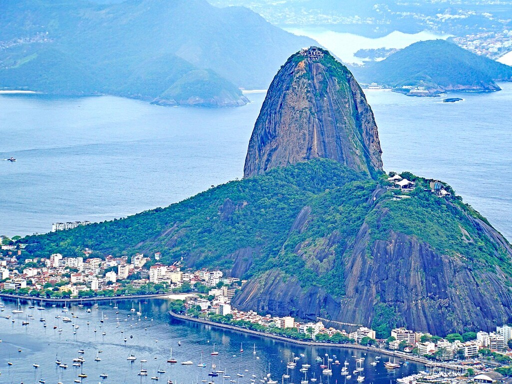
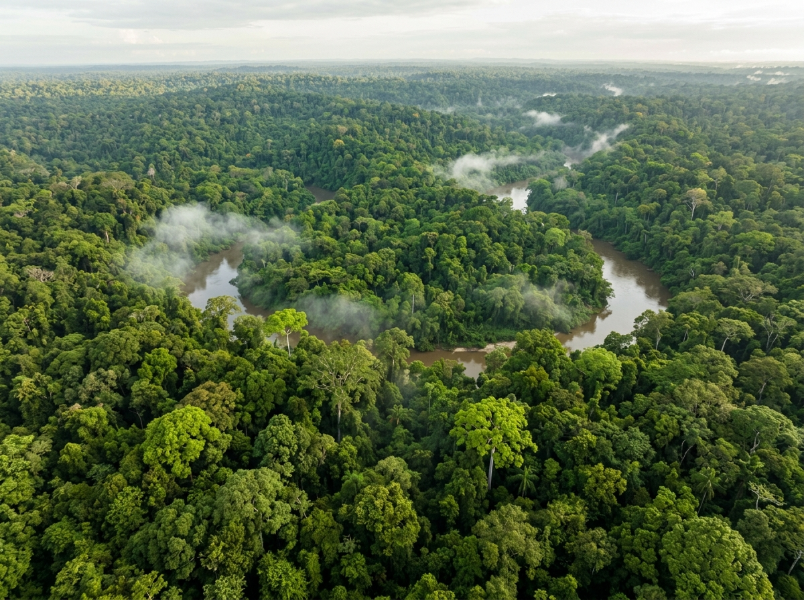
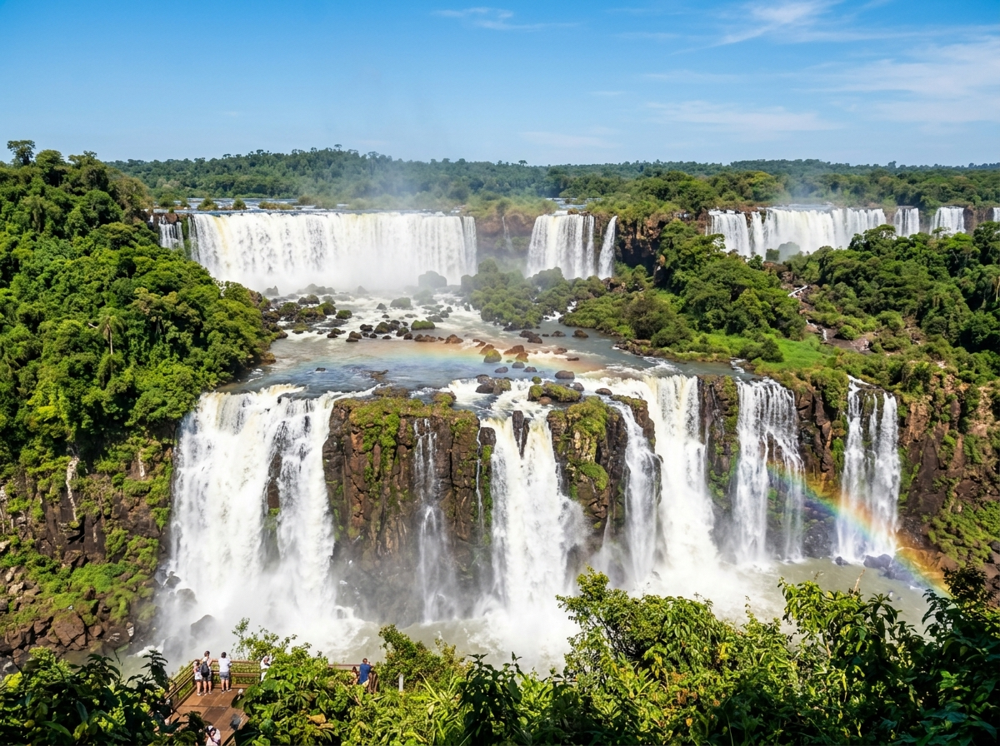
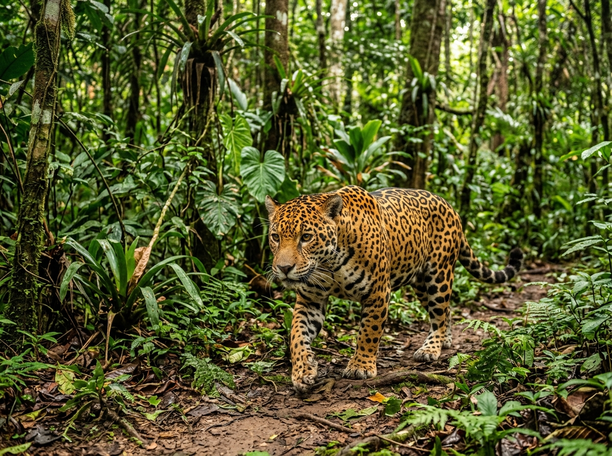
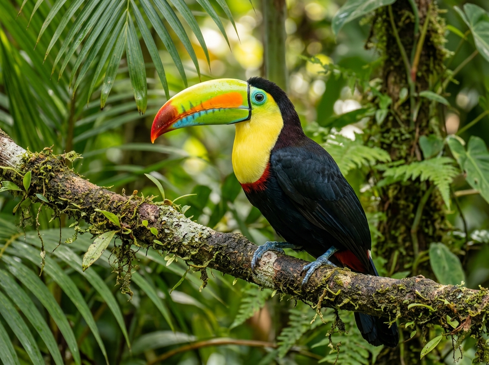
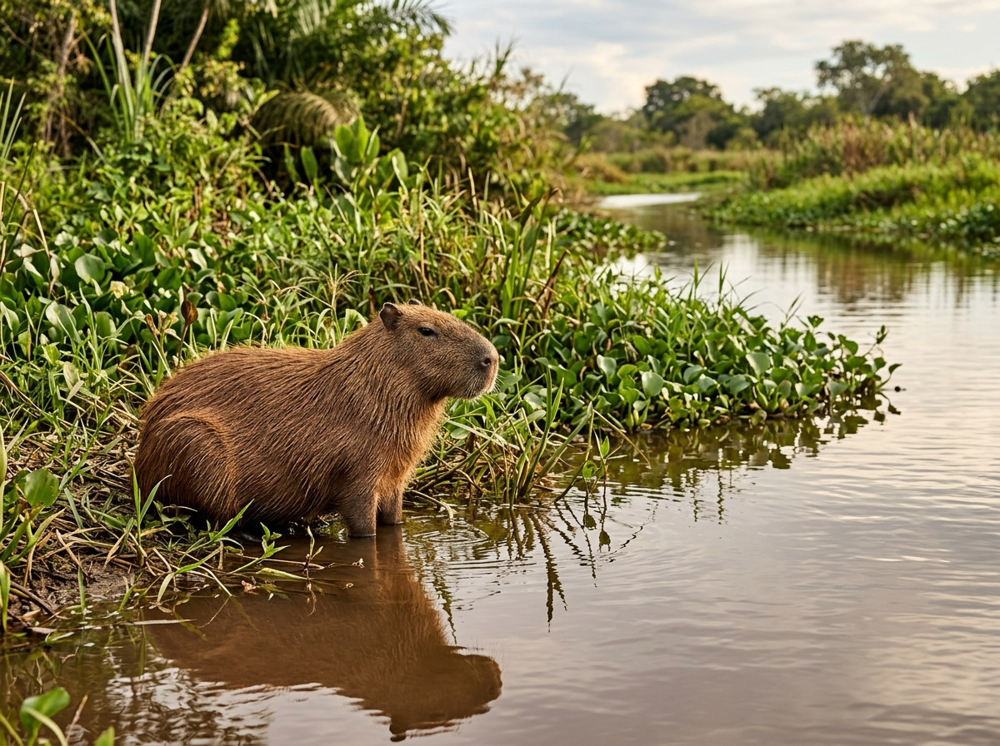
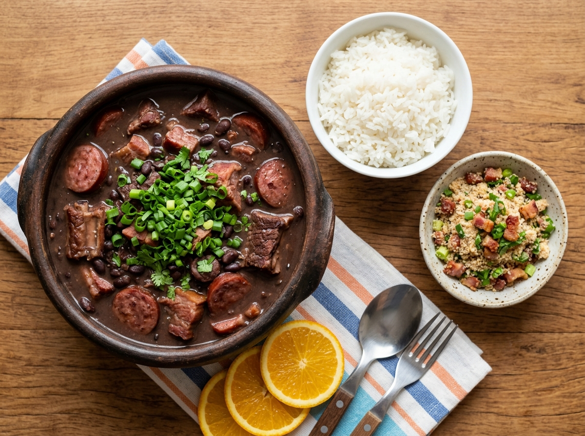
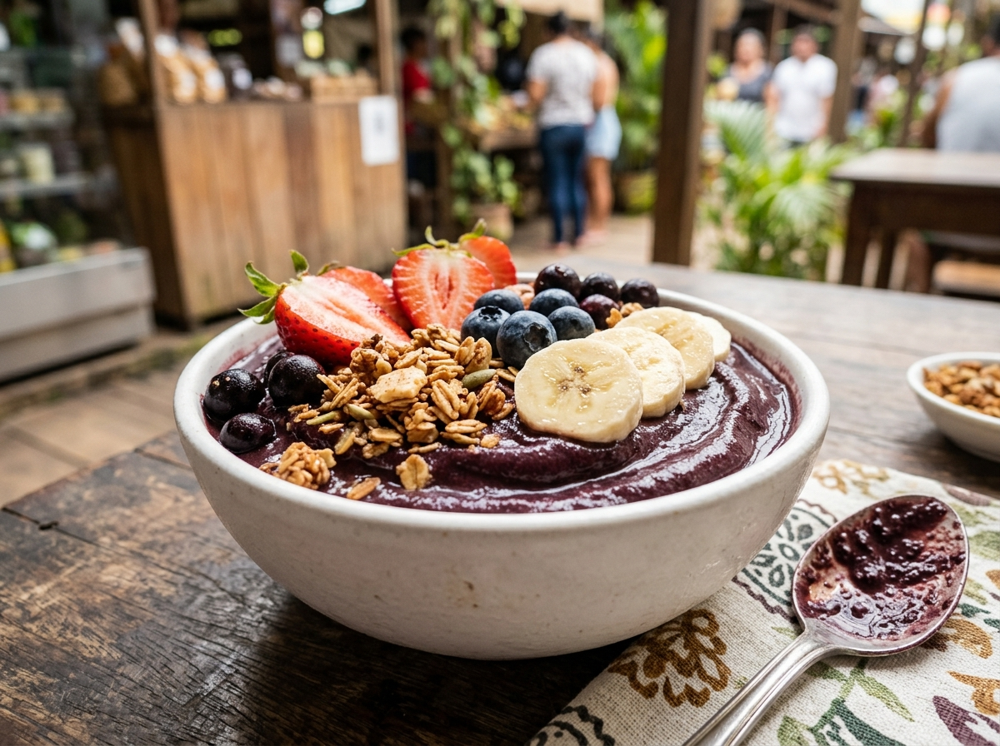
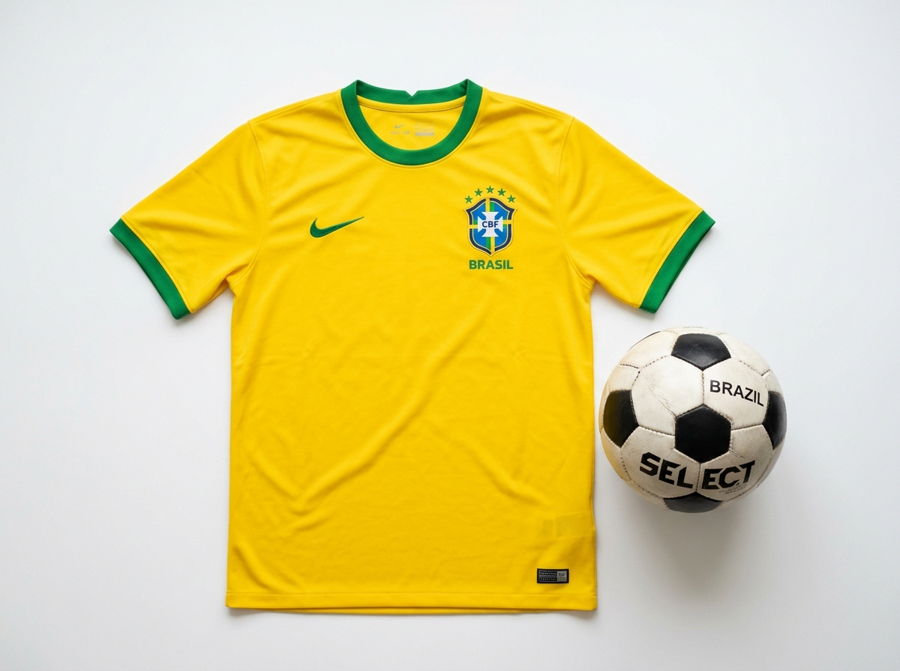
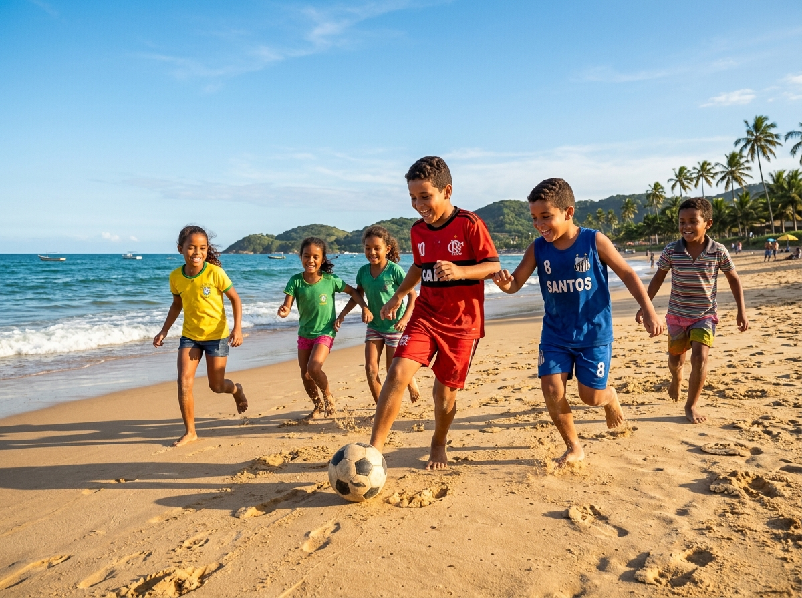

Hier stehen die wichtigsten Daten zu deinem Land. In der App baust du daraus deinen eigenen Steckbrief.
| Hauptstadt | Brasília |
| Kontinent | Südamerika |
| Sprache | Portugiesisch |
| Währung | Real |
| Einwohner | etwa 214 Millionen Menschen |
| Fläche | etwa 8,5 Millionen km², mehr als 20 Mal so groß wie Deutschland und das größte Land Südamerikas |
| Großer Fluss | der Amazonas, einer der größten Flüsse der Welt |
| Nachbarländer | Brasilien grenzt an fast alle Länder Südamerikas, nur nicht an Chile und Ecuador |
In Brasilien gibt es viele berühmte Orte. Diese vier solltest du kennen.
ChristusstatueÜber der Stadt Rio de Janeiro steht eine riesige Jesus-Statue auf einem Berg. Sie hat die Arme weit ausgebreitet und ist 38 Meter hoch. Von ganz unten kann man sie schon von Weitem sehen. Sie ist das Wahrzeichen von Brasilien.
Grüne Wörter für die AppJesus-Statueauf einem Berg38 Meter hochausgebreitete ArmeRio de Janeiro
ZuckerhutDer Zuckerhut ist ein steiler Felsberg direkt am Meer in Rio. Mit einer Seilbahn fährt man nach ganz oben. Von dort sieht man über die ganze Stadt und das blaue Meer. Der Berg hat seinen Namen, weil er aussieht wie ein Hut.
Grüne Wörter für die AppFelsbergam MeerSeilbahnAussichtin Rio

Amazonas-RegenwaldDer Amazonas-Regenwald ist der größte Regenwald der Erde. Hier ist es warm und feucht, und es regnet sehr oft. Im Wald leben unzählige Tiere und Pflanzen. Viele davon gibt es nur dort und nirgendwo sonst auf der Welt.
Grüne Wörter für die Appgrößter Regenwaldwarm und feuchtviele Tiereviele Pflanzenviel Regen
Iguaçu-WasserfälleDie Iguaçu-Wasserfälle sind eine lange Reihe von Wasserfällen mitten im Dschungel. Das Wasser stürzt laut in die Tiefe und spritzt hoch in die Luft. Sie gehören zu den breitesten Wasserfällen der Welt. Viele Menschen kommen, um sie zu sehen.
Grüne Wörter für die Appviele Wasserfälleim Dschungelsehr breitlautWasser stürzt

Im Regenwald und an den Flüssen Brasiliens leben Tiere, die du bei uns nicht in der Natur findest.

JaguarDer Jaguar ist die größte Raubkatze von Amerika. Er lebt im Regenwald und hat ein geflecktes Fell. Damit ist er gut versteckt. Der Jaguar kann sogar gut schwimmen und schleicht leise durch den Wald.
Grüne Wörter für die Appgrößte Raubkatzeim Regenwaldgeflecktes Fellkann schwimmenversteckt
TukanDer Tukan ist ein bunter Vogel mit einem riesigen Schnabel. Der Schnabel leuchtet oft gelb oder orange. Damit pflückt der Vogel Früchte von den Bäumen. Der Tukan lebt hoch oben im Regenwald.
Grüne Wörter für die Appbunter Vogelriesiger Schnabelleuchtetfrisst Früchteim Regenwald


CapybaraDas Capybara ist das größte Nagetier der Welt. Es sieht aus wie ein riesiges Meerschweinchen. Am liebsten lebt es nah am Wasser und schwimmt gern. Capybaras sind ruhig und leben oft in einer Gruppe.
Grüne Wörter für die Appgrößtes Nagetierwie ein Meerschweinchenam Wasserschwimmt gernin der Gruppe
In der App kannst du beim Essen das Foto nehmen oder dein Gericht selbst malen.
FeijoadaFeijoada ist ein kräftiger Eintopf aus schwarzen Bohnen und Fleisch. Sie gilt als das Nationalgericht von Brasilien. Oft wird sie am Wochenende mit der ganzen Familie gegessen. Dazu gibt es Reis.
Grüne Wörter für die AppEintopfschwarze BohnenFleischNationalgerichtam Wochenende

Pão de QueijoPão de Queijo sind kleine warme Käsebrötchen. Außen sind sie knusprig, innen ganz weich. Viele Menschen essen sie gern zum Frühstück. Sie schmecken am besten frisch aus dem Ofen.
Grüne Wörter für die AppKäsebrötchenwarmaußen knuspriginnen weichzum Frühstück
AçaíAçaí ist eine dunkelviolette Beere aus dem Amazonas. Aus ihr macht man eine kalte, dicke Bowle. Dazu kommen frische Früchte. Das süße Açaí ist besonders an heißen Tagen beliebt.
Grüne Wörter für die Appviolette Beereaus dem Amazonaskalte Bowlemit Früchtensüß

⚽ Gut zu wissen
Die Fußball-Nationalmannschaft von Brasilien heißt die Seleção und spielt im gelb-grünen Trikot. Brasilien wurde schon fünfmal Weltmeister, öfter als jedes andere Land. Auch bei der WM 2026 ist das Team dabei und gilt als einer der großen Favoriten. Viele berühmte Fußballer kommen aus Brasilien.
Grüne Wörter für die Appgelb-grünes Trikot5x Weltmeisterbei der WM 2026FavoritSeleção
🌟 Profi-Wissen
Früher war Pelé der berühmteste Brasilianer. Er gilt als einer der besten Fußballer aller Zeiten. Auch Ronaldo, den man R9 nennt, war ein Weltstar. Bei der WM 2014 verlor Brasilien mit 7:1 gegen Deutschland, das war ein unvergessliches Spiel. Heute ist Vinícius Júnior Brasiliens größter Star.
Grüne Wörter für die AppPelé5x WeltmeisterRonaldo R9 19987:1 gegen Deutschland 2014Vinicius Jr.

Schule in BrasilienIn Brasilien gehen viele Kinder nur einen halben Tag zur Schule. Die einen kommen am Vormittag, die anderen am Nachmittag. So passen mehr Kinder in ein Schulhaus. Viele tragen eine Schuluniform mit dem Zeichen ihrer Schule.
Grüne Wörter für die Appnur halber TagVormittag oder NachmittagSchuluniformvolle SchulenZeichen der Schule
Strand und SpielViele Kinder in Brasilien wohnen nah am Meer. Nach der Schule spielen sie oft am Strand. Am beliebtesten ist Fußball, manche spielen ihn sogar barfuß im Sand. Auch Beachvolleyball wird gern gespielt.
Grüne Wörter für die Appnah am Meeram StrandFußballbarfuß im SandBeachvolleyball
